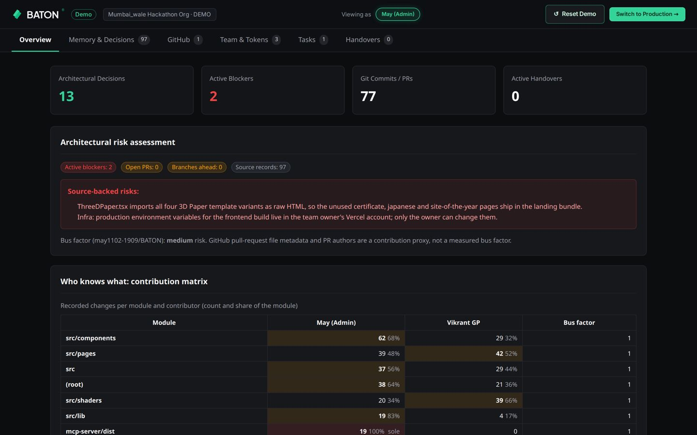
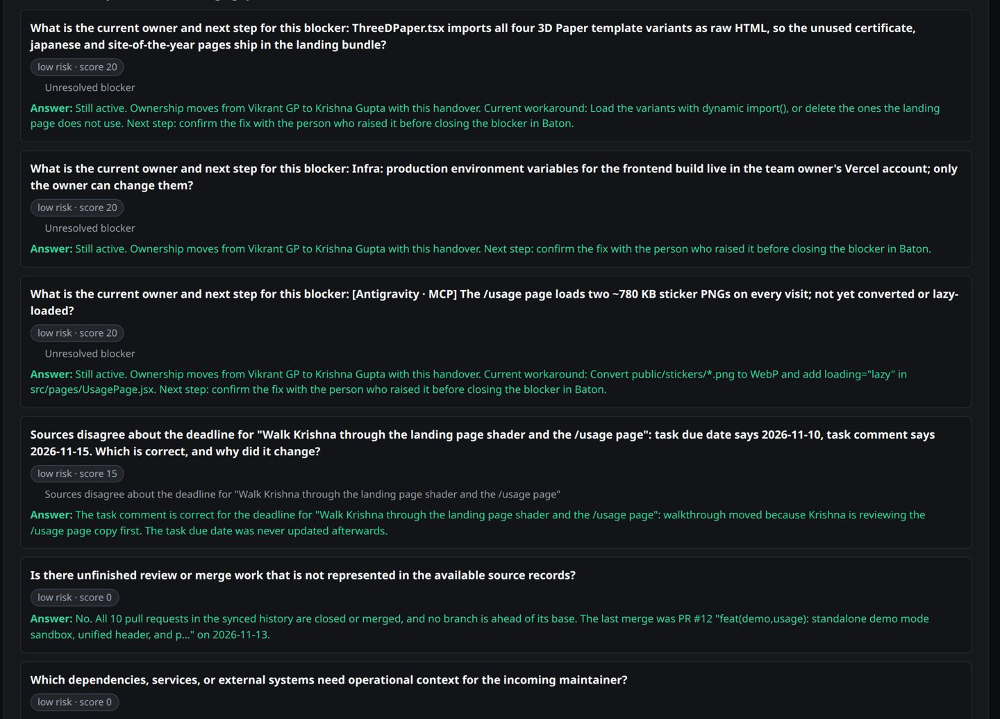
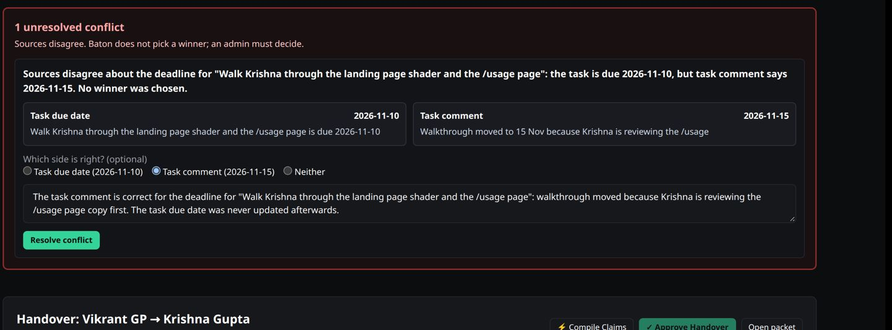
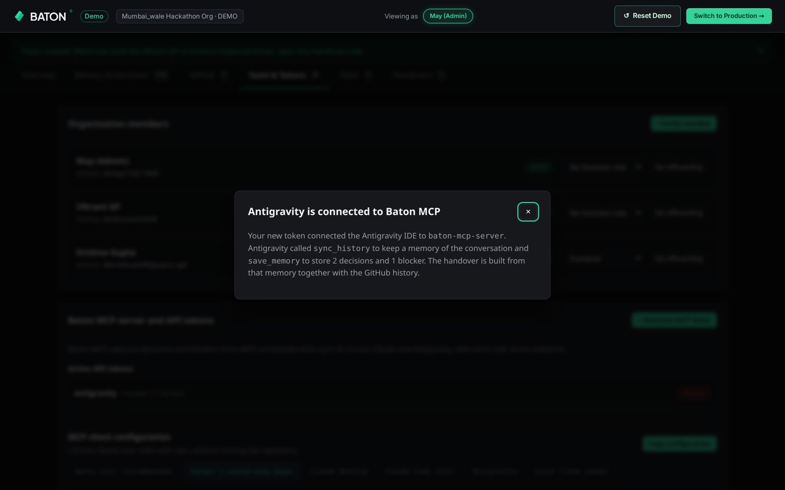
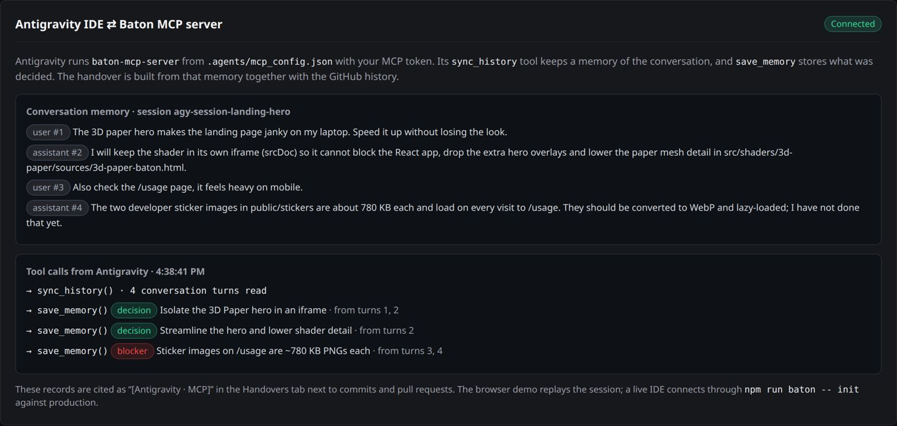
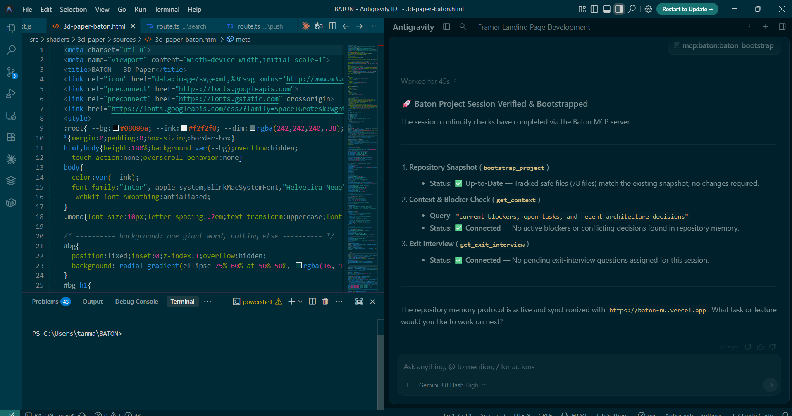
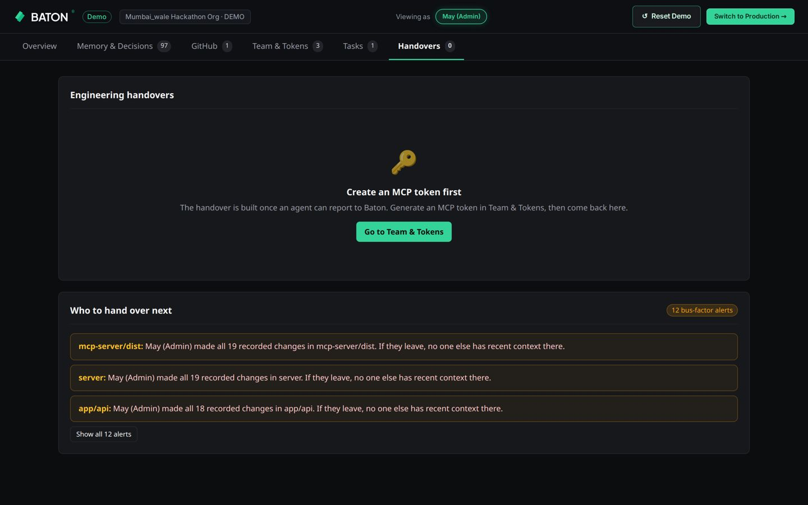

The engineering handover platform that turns GitHub history and AI-agent memory into a cited, risk-ranked, admin-approved handover — before the knowledge walks out of the door.
Code survives a resignation. The reasoning behind it does not: why a library was chosen, which workaround is temporary, which module only one person understands. BATON captures that reasoning while the work happens and turns it into a handover the next engineer can trust.
/demo-page that runs the same engine on a snapshot of our own repository. Every main journey is covered by an automated end-to-end test that runs on every pull request.
Per the organisers' guidance on demo access, BATON ships a dedicated demo route. Open https://baton-nu.vercel.app/demo-page — it needs no login and no credentials. It is pre-loaded with the real BATON repository (63 commits, 14 pull requests, 3 contributors), runs the production handover engine, and never touches production data. Reset Demo restores it at any time.
| # | Do this | What you should see |
|---|---|---|
| 1 | Overview tab | Decisions, blockers, commit counts, the architectural risk card and the “Who knows what” contribution matrix with bus factor per module (R3.2). |
| 2 | Handovers tab | “Create an MCP token first” — a handover needs an agent connected, exactly as in production. |
| 3 | Team & Tokens → + Generate MCP Token | A real baton_… token; close the dialog and the Antigravity ⇄ Baton MCP pop-up explains what connected. Closing it scrolls to the live panel of tool calls. |
| 4 | Handovers again | Vikrant GP → Krishna Gupta handover, built only from Vikrant's frontend work: risk-ranked exit interview, 1 unresolved conflict (task due 10 Nov vs. comment 15 Nov) and evidence-backed claims (R3.1). |
| 5 | Click Resolve conflict (pre-filled) | The conflict becomes a reviewed claim; the handover is approved and Markdown + PDF export unlock. |
| 6 | Open packet | Role-filtered packet, version history with diff, and cited newcomer Q&A (R3.3). |
| 7 | Try to break it | Refresh mid-flow, click twice, submit empty forms, revoke the last token (the handover is withdrawn and rebuilt on the next token). State persists; nothing hangs. |
baton-nu.vercel.app → Launch App → sign up with email or GitHub → create a workspace → connect a repository through the BATON GitHub App → generate an MCP token → start a handover.github.com/may1102-1909/BATON — npm install && npm run dev runs the full app locally; the README lists every environment variable and migration (Section 11).Measured line-by-line against the “Roadmap for Round 3” table on page 6 of our Round 2 report. Nothing was substituted or descoped.
| Commitment | Promised at Round 2 | Delivered in Round 3 | Status |
|---|---|---|---|
| R3.1 Risk-ranked exit interview & deterministic conflict detection | Sort questions strictly by risk (bus-factor-1 modules and unmerged branches first); deterministic conflict detection, e.g. task vs. thread deadline mismatch. | Documented scoring (server/risk.js): bus-factor-1 module, open PR, active blocker, uncited decision, ahead-of-base branch — weighted, capped at 100, labelled high/medium/low; questions ordered by score with the reason shown. server/conflicts.js finds date disagreements between a task and its comments without any model; only an admin can resolve them. | DELIVERED |
| R3.2 Bus-factor dashboard & member contribution matrix | Bus-factor dashboard on the main workspace with per-member contribution summaries and early-warning alerts (“only 1 person has touched /payments”). | “Who knows what” matrix on the Overview (changes and share per module × contributor, bus factor column, sole-owner highlighting); bus-factor alerts (“only one person has changed server/”) with one-click Start handover. Alerts require ≥3 changes and clear when a second contributor appears. | DELIVERED |
| R3.3 Role-based newcomer Q&A with cited answers & version history UI | Role-filtered handover packet and cited Q&A in the main router; role filters (Backend, Infra, Admin); v1/v2 diff viewer; Playwright E2E tests. | Function roles (backend, frontend, infra, data, design, product) plus admin visibility, enforced in the API and inside Postgres (match_memory). Packet page /handover/:id with cited Q&A, version history and side-by-side diff. 26 Playwright tests in CI. | DELIVERED |


Evidence in tests: tests/round3.test.js (14 tests — scoring weights, top question targets the single-contributor module, 10 Nov vs 15 Nov conflict, bus-factor thresholds, versions/diffs, leaver-scoped evidence), tests/handover.test.js, tests/schema.test.js (role visibility inside SQL), e2e/handover.spec.js.
baton init writes client configs + git post-commit hooksync_history) for Claude Code & Antigravity transcriptsexport_handover) and PDF export/usagemcp-server/src/redact.ts) and server-side before storage and before any LLM call — using credential patterns, JWT/private-key detection, emails and Shannon-entropy checks. GitHub OAuth tokens are encrypted at rest (AES-256-GCM, TOKEN_ENCRYPTION_KEY); API tokens and invites are stored only as hashes; OAuth state is hashed and single-use. Database rules (RLS) on every table: handovers are visible only to admins and the two people involved, draft and admin-only claims stay hidden, and agent transcripts are private to their author.match_memory, generation lock| Decision | Why |
|---|---|
| Deterministic risk & conflict logic | Judges and admins can reproduce every score; a model outage never changes a risk label. Models only draft text, never decide. |
| Citation validation after generation | An LLM claim survives only if its cited source exists and is visible to the reader; otherwise it is downgraded to Inferred/Missing. |
| Permissions inside the database | RLS plus visibility/audience filtering inside match_memory — a bug in the API cannot leak another team's or role's evidence. |
| Demo = production engine | The demo posts its browser state to /api/demo, which runs the real createApp against an in-memory store with no network and no credentials. What judges see is what customers get. |
| Local stdio MCP + HTTP collector | Agents run BATON next to the code (no data leaves before redaction); the server only accepts scoped, hashed tokens on collector routes. |
| Cross-instance generation lock | A Postgres claim with a 5-minute stale timeout stops two serverless instances from generating the same handover twice. |
Stack: React 18 + Vite 6, Tailwind, Three.js (landing) · Node.js 20 serverless on Vercel · Supabase (Postgres, Auth, pgvector, RLS) · Google Gemini 2.5 Flash · MCP TypeScript SDK · Playwright · GitHub Actions.
BATON's MCP server was itself built inside AI IDEs, and it remembers the conversations those IDEs have. The demo shows that loop end to end: the handover is assembled from both the git history and the memory the Antigravity agent recorded through BATON's tools.
baton-mcp-server from .agents/mcp_config.json.

| MCP tool | Purpose | MCP tool | Purpose |
|---|---|---|---|
log_decision | Record an architectural decision | sync_history | Sync latest commit, file summaries, agent conversation turns |
log_blocker | Record a blocker / workaround | github_activity | Repository tracking state |
get_context | Search repository memory | get_exit_interview | Fetch assigned interview questions |
bootstrap_project | Safe incremental repo snapshot | answer_exit_question | Answer from inside the IDE |
save_memory | Store one new decision/blocker/delta | export_handover | Write the approved packet into the repo as Markdown |
get_file_context | Decisions touching a file | baton_bootstrap (prompt) | Session start-up guidance |
npm run baton -- init --org … --repo … --key … against production; the stdio round trip (save, search, interview, Markdown export) is covered by tests/mcp-integration.test.js.
baton_bootstrap prompt against production (baton-nu.vercel.app): bootstrap_project confirmed the repository snapshot (78 tracked files), get_context and get_exit_interview answered over the token-authenticated API.The brief named four things a judge will do. Each one has a specific behaviour and a test.
| Judge action | BATON's behaviour | Covered by |
|---|---|---|
| Bad input | Validated names, sizes and IDs; garbage, expired, used or wrong-email invites refused without being consumed; oversized demo state rejected (413); bad webhook signatures refused; cross-organisation URLs return 404 without leaking names. | reliability.test.js, demo.test.js |
| Empty state | Every tab has an explanatory empty state with the next action (“Create an MCP token first”, “Connect a repository”). Missing Supabase settings show setup guidance, not a crash. | navigation.spec.js, production.spec.js |
| Refresh | Demo state persists in the browser and is replayed by the engine; production state is server-side. Interview refresh keeps answered questions. | reliability.test.js |
| Same action twice | Collector de-duplicates by session/event ID; webhooks are idempotent; duplicate and cross-instance handover generation is locked; demo requests are serialised. | reliability.test.js, github.test.js |
| Service outage | Database outage → 503 “Database unavailable, try again shortly” (15 s timeout) and a Retry button that recovers; Gemini failure → evidence-only fallback; one bad GitHub record no longer fails the whole sync; GitHub rate limit → 429. | production.spec.js, reliability.test.js |

Run on 16 November 2026 against the submitted main branch. Round 2 shipped with 31 tests; Round 3 grew the suite almost five-fold and added a full browser layer and continuous integration.
npm test · 11.9 smcp-server · 0.7 s| File | Tests | What it proves |
|---|---|---|
reliability.test.js | 25 | Invite lifecycle and abuse cases; API-token scoping, revocation and expiry; webhook signatures; GitHub error mapping; cross-org isolation; outages → 503; generation locking; Gemini fallback; interview refresh. |
github.test.js | 20 | OAuth state security, account linking, installations, paginated repository discovery, sync, webhook idempotency, credential protection. |
backend.test.js | 14 | Memory store adapters, demo vs production identity, organisation scoping, tasks/comments, admin protection. |
handover.test.js | 14 | Evidence-based generation, citation rules, claim review, Q&A privacy, stale-evidence invalidation, permissions. |
round3.test.js | 14 | R3.1–R3.3: gap-score weights, risk ordering, conflict detection, bus-factor thresholds, leaver-scoped evidence, audiences, versions and diffs. |
workspace.test.js | 13 | Workspace admin, data reset/delete, Markdown export permissions, visibility-filtered search. |
demo.test.js | 9 | Zero-email demo identities; production-only routes blocked; demo MCP token works on the collector; Antigravity memory is cited by the handover alongside git history. |
mcp-integration.test.js | 3 | Real stdio MCP server against the authenticated API: save, search, interview, export, outage message. |
schema.test.js | 4 | Applies supabase/schema.sql and migrations to in-process Postgres + pgvector (PGlite); checks RLS for sources, handovers, claims, transcripts and summaries as different users, the handover workflow on real tables and role visibility inside match_memory. |
legacy-migration.test.js | 1 | Builds a database with the old production handovers shape, applies the upgrade and security migrations twice, keeps the old rows, then starts and generates a real handover on it. |
| Spec | Tests | Journeys |
|---|---|---|
handover.spec.js | 2 | “The handover appears after an MCP token is created; resolving the conflict enables Markdown and PDF export” · “Demo GitHub, team invite and MCP tools work without signing in” (incl. Antigravity pop-up → scroll to panel). |
production.spec.js | 12 | Production overview without demo content; GitHub account switch; own-account repository picker; database outage on first load → Retry recovers; missing app install; connect/disconnect repositories; team settings and invites. |
routes.spec.js | 9 | Retired routes redirect; invite token survives sign-in; landing page; demo never offers workspace management; usage page. |
navigation.spec.js | 3 | Demo navigation; missing Supabase configuration; no e-mail addresses in demo data. |
Redaction of API keys, JWTs and high-entropy strings; credential and repository scoping; event de-duplication; scoped GitHub activity; bounded bootstrap metadata; stdio tool listing.
mcp-server/dist must match sourceNo pull request in Round 3 was merged with a failing check. When a UI change broke a journey (e.g. the new Antigravity pop-up intercepting clicks), CI caught it and the test was updated in the same pull request.
Owned by Komal Chaurasiya (QA & User Experience Lead): the test plan, the synthetic off-boarding scenario with planted secrets and unmerged work used to check redaction and role filtering, and usability reviews of the main journeys. Manual checks complement the automated suites above; the pass/fail evidence in this section comes from the automated runs.
npm install · npm test · npx playwright install chromium && npm run test:e2e · cd mcp-server && npm ci && npm test — no credentials or network needed.
Beyond the three commitments, Round 3 began with an honest audit of our own build. It found real defects — a committed API token, sign-ups that became admins of the first workspace, a handover screen wired to the wrong API shape, a risk card that always said “no risk”. All were fixed before new features were added.
| PRs | Improvement |
|---|---|
| Audit fixes | Committed token removed from the repository; sign-up no longer joins an existing organisation; handover and risk screens wired to real API responses. |
| #12–#15 | Standalone demo sandbox; GitHub connect flow made to work end to end; hard-coded dashboard data removed; demo rebuilt on the real BATON repository. |
| #16 | Round 3 core: risk-ranked interview, conflict detection, bus-factor matrix, role filter, packet page, Playwright E2E and CI. |
| #17–#24 | Production-ready dashboard; connect any repository; workspace management and deletion; MCP Markdown export; Claude Code & Antigravity setup; GitHub sync resilience (bad records, private-key formats); own-account repository picker. |
| #25 | Hardening: real-Postgres schema tests, search permissions inside SQL, cross-instance generation lock, 503 outage handling with Retry, operations documentation. |
| #26–#29 | Judge-ready demo: ready-made handover, resolve-then-export (PDF + Markdown), working invites and MCP, export loading state, token revocation withdraws the handover. |
| #30–#36 | Sign-in and onboarding flow (GitHub sign-in → /usage), usage showcase, handovers gated on an MCP token, only real contributors can be handed over. |
| #37–#39 | Antigravity ⇄ Baton MCP in demo mode: memory from the IDE feeds the handover; connection pop-up. |
| #40 | Handovers are scoped to the leaving member's own work; the demo is now Vikrant GP → Krishna Gupta, built from Vikrant's real frontend commits; clearer demo buttons. |
| #41 | GitHub-style interface: system fonts, sentence-case labels, /usage features as a list and the before/after as a pull-request diff; every screen fits a phone. |
| #42–#44 | Security review: database rules now limit handovers to admins and the two people involved, hide draft and admin-only claims, and make agent transcripts private to their author; schema accepts every visibility value the API writes; an additive migration upgrades older production handover tables, with a test that replays it on the old table shape. |
| #45 | The 3D paper landing page now runs on phones and tablets as well as laptops; the header fits 320px screens. |
server/handover.js): gap detection, claims, citation validation, versions, diffs, Q&A, Gemini + evidence-only fallbackrisk.js), conflict detection (conflicts.js), bus-factor matrix, role audiences (audience.js)baton init CLI, hooks, transcript sync for Claude Code & Antigravity, client-side redactionmain./usage): the step-by-step guide judges and new users follow, with an “On this page” section navigator, ambient glow and the developer-notes card with avatar stickers and name hover pills/demo-page and its in-browser sandbox with a unified header (≈1,050 lines), later connected to the production engineUser research and survey, wireframes and the five-stage user flow, handover format and confidence labels (Verified / Inferred / Missing / Conflicting), exit-interview question and AI prompt design.
Test plan, redaction and permission test cases, synthetic demo data, usability testing and project documentation.
main, 82 of them during Round 3, across pull requests #1–#45 between 8 and 16 November 2026.The README is written for someone who has never seen the project: components, setup, every environment variable, migrations, operations and known limits. docs/MCP.md covers each MCP client; AGENTS.md tells AI agents how to log into BATON.
| Configuration | Purpose |
|---|---|
SUPABASE_URL, SUPABASE_SERVICE_ROLE_KEY, SUPABASE_ANON_KEY | Database, auth and browser access (service key never sent to the browser) |
TOKEN_ENCRYPTION_KEY | Encrypts stored GitHub OAuth tokens |
GITHUB_APP_ID, GITHUB_APP_PRIVATE_KEY, GITHUB_CLIENT_ID/SECRET, GITHUB_WEBHOOK_SECRET | GitHub App, account linking and verified webhooks |
GEMINI_API_KEY (optional) | Drafting, Q&A and embeddings; without it BATON runs evidence-only |
supabase/schema.sql + migrations | New databases need only the schema; migrations are idempotent and listed in order |
| What | Details |
|---|---|
| Templates / earlier code | The landing-page hero adapts the ThreeUI “3D Paper” shader template (src/shaders/3d-paper/), restyled with BATON branding. No other pre-existing code: the repository starts with its first commit on 8 November 2026 and all product code was written during the event. |
| Open-source libraries | React, Vite, Tailwind, Three.js, Express, Supabase client, Model Context Protocol TypeScript SDK, Playwright — used under their licences. |
| AI tools | Hoplite (AI coding agent) for implementation, tests and pull requests under team direction and review — its branches are named hoplite/* in the public history; Google Antigravity (Gemini) as an IDE assistant; Google Gemini 2.5 Flash inside the product for drafting, Q&A and embeddings. |
Today, when anyone leaves a company, the handover is a rushed PDF, a long email and a list of links, and each team does it differently. Our goal is for BATON to replace all of that. Work already lives in Jira, Slack, GitHub, Google Drive and the CRM, so BATON reads it there, asks the person leaving only about the gaps, and gives the successor one cited handover in the same format for every role.
Live: baton-nu.vercel.app · Demo without login: baton-nu.vercel.app/demo-page · Code: github.com/may1102-1909/BATON
Team Mumbai_wale — Tanmay Khurpe, Vikrant GP, Krishna Gupta, Komal Chaurasiya